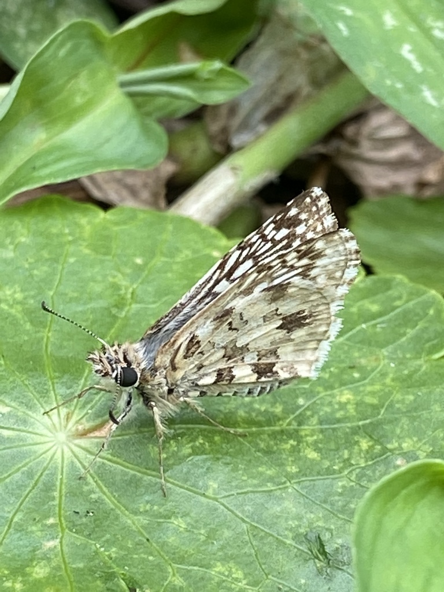

- A small, fast butterfly checkered in gray, white, and dark charcoal — darting low over open ground and landing flat to bask in the sun.
- Males develop a dusting of blue-gray hairs on the body and wing bases that gives them a frosty, cool-toned look.
- It is a spread-winged skipper (subfamily Pyrginae) — the 'fighter jet' family of butterflies. While grass skippers hold their wings angled up like a tent at rest, spread-winged skippers bask with wings laid completely flat.
- Common in sunny, weedy, open areas — exactly the kind of wild edges a botanical park preserves.
Bold checkered gray, white, and dark pattern on the wings.
Frosty blue-gray hair on the body and wing bases.
Fast, low, darting — typical skipper.
Basks with wings spread completely flat — the signature of a spread-winged skipper (Pyrginae), not a grass skipper.
Silent.
A small, fast, checkered gray-and-white butterfly basking flat on the ground or low vegetation in an open, sunny, weedy area.
Caterpillars feed on plants in the mallow family (Malvaceae) — especially fanpetals and wireweed (Sida rhombifolia and Sida acuta), which grow as common 'weeds' in open ground. Adults sip nectar from small flowers, particularly Sida species, Frogfruit (Phyla nodiflora), and Spanish Needles (Bidens alba).
Open, sunny, weedy areas and garden edges. Watch for the fast, low flight.
Year-round in southern Florida, most numerous in warm months.
Observe and enjoy.

- © Pammy63 (CC-BY-NC), via iNaturalist